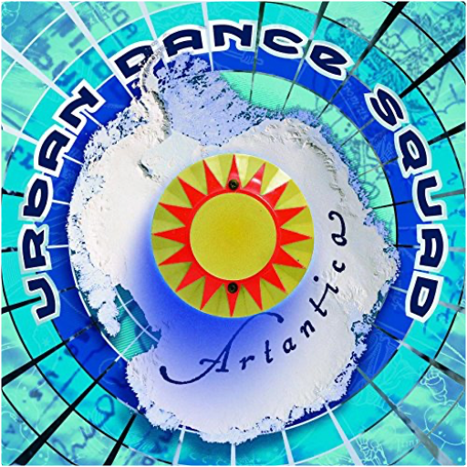

Deux ans après s'être fait épingler une palme d'or en 1985 pour Papa est en voyage d'affaires, Emir Kusturica récidive avec Underground. Comme à son habitude, le Yougoslave fait appel à son ami de toujours, Goran Bregovic. Car Kusturica a une véritable connaissance des traditions musicales de son pays. Le bonhomme, ex-punk, jouait de la basse entre 1986 et 1988 avec Zabranjeno Pusenje autrement dit No Smoking (qui renaît de ces cendres à l'avènement du deuxième millénaire). Ainsi la musique d'Underground navigue entre jazz, folk et musique tzigane, country, pop et marches turques. La partition accroche des cotillons et des serpentins à des refrains de fête foraine. Elle décompose une poésie slave s'étalant dans la débauche d'un univers baroque traversée par la voix nostalgique de Cesaria Evora. Sa saudade intitulée "Ausencia" illumine ce bric à brac de rythmes influencés par la culture gitane. —Sabrina Silamo |  artanticaurban dance squad For those who think of rap-metal fusion as something invented by bands like Korn and Limp Bizkit, Urban Dance Squad returned in 1999 to remind you that they've been doing it for ten years now, and from a home base in Holland. Artantica is the fifth and last studio album by Urban Dance Squad. The album was a return to the band's hip-hop roots and received critical acclaim. Artantica marked the return of DJ DNA, who had been absent on the band's two previous recordings. Stylistically the album is very diverse, as are most by UDS, with vocalist Rudeboy often singing and rapping in the same song. The single "Happy Go Fucked Up" became a hit in Europe. Urban Dance Squad disbanded the following year, though they did perform together again in 2006. For the first time since it's original release, Artantica is pressed on vinyl. The first run of this limited edition of 500 numbered copies is pressed on 180 gram transparent vinyl.  Ce témoignage du concert triomphal qu'elle a donné à l'Olympia confirme, si besoin était, que Vanessa Paradis est bel et bien une artiste avec laquelle il faut compter, tant elle passe l'épreuve du feu avec une prestance aussi gracieuse qu'originale. De sa voix délicieusement frêle et agréablement troublante, elle égrène les plus belles perles de son répertoire. De son tout premier tube, "Joe le taxi", à "Marylin et John" ou "Maxou", signés Etienne Roda-Gill et Franck Langolff, et à ceux que lui concocta avec bonheur Serge Gainsbourg, comme "Tandem" ou "Dis-lui toi que je t'aime". Sans oublier les chansons qui lui ont valu une reconnaissance internationale via sa collaboration avec Lenny Kravitz, le très Motown "Be My Baby", "Natural High" ou "Sunday Monday" qu'elle interprète en anglais. Parce qu'en matière de reprises elle sait faire preuve d'un goût sensible, Vanessa Paradis nous gratifie à plaisir de ses versions personnalisées de "As Tears Go By" des Rolling Stones et des "Cactus" de Jacques Dutronc. Pour un album de 16 titres qui, entre rock, soul et funk, diffuse une émotion magique tant elle vibre de subtilités. —Sylvie Devilette  1987. Une jeune interprète aux allures de Lolita, cartonne sur les ondes avec "Joe le taxi". Un succès retentissant qui la hissa parmi les espoirs de la variété française. Le sweat-shirt et le vieux jean troué de ses débuts rangés au placard des souvenirs, la chrysalide devenue papillon s'est imposée au fil de ses albums (sans pour autant se brûler les ailes aux feux des projecteurs), en s'entourant de grosses pointures comme Serge Gainsbourg et Lenny Kravitz. Grâce à eux, Vanessa se fait un nom au paradis des artistes. 2001. C'est sur les planches du Zénith qu'elle choisit d'accueillir ses fans pour une rétrospective musicale à travers laquelle on retrouve les tubes d'hier ("Marilyn & John", "Dis-lui toi que je t'aime", "Sunday Mondays"...) et les plus récents comme "Bliss", "Les Acrobates" ou "St Germain". À noter cet hommage rendu à son Pygmalion, Serge Gainsbourg, avec "Requiem pour un con", reprise percutante ovationnée par un public conquis. Vanessa Paradis n'a décidément plus rien à prouver. —Valérie Dupouy  Autrefois en balade, avec "Joe le taxi", dans l'ombre de Serge Gainsbourg ou de Lenny Kravitz, Vanessa Paradis, désormais émancipée, s'est mise à son compte pour raconter ses petits bonheurs domestiques, ses miracles quotidiens. L'ex-lolita devenue maman nourrit son Bliss de ballades languides et d'orchestrations acoustiques. N'ayant pas un goût très prononcé pour le minimalisme, elle verse volontiers dans l'éclectisme. Des variations orientales "L'Eau et le vin" aux cuivres de "Commando", des violoncelles et cordes de "Que fait la vie" à la basse sensuelle de "La la la song" (liste des instruments non exhaustive), Paradis s'offre un vrai bazar de sonorités diverses qui habillent berceuses, bossa et titres funky chantés tantôt en anglais, tantôt en français. Avec une naïveté revendiquée, Vanessa Paradis, auteur ("When I Say", "Saint-Germain") voire compositeur ("Les Acrobates"), flotte dans un univers câlin, voyage dans une intimité doucereuse. Elle s'émerveille des tendres gazouillis de sa fille "La Ballade de Lily Rose" et des mélodies savamment orchestrées par Franck Monnet, Didier Golemanas, Johnny Depp, Alain Bashung ou Mathieu « M » Chedid, producteur d'une partie de l'album. Bliss, un bouquet de titres au charme irrésistible, offert par Vanessa Paradis en pleine béatitude. —Sabrina Silamo |

Julien
Collection Total:
2 100 Items
2 100 Items
Last Updated:
Feb 15, 2025
Feb 15, 2025


 Made with Delicious Library
Made with Delicious Library